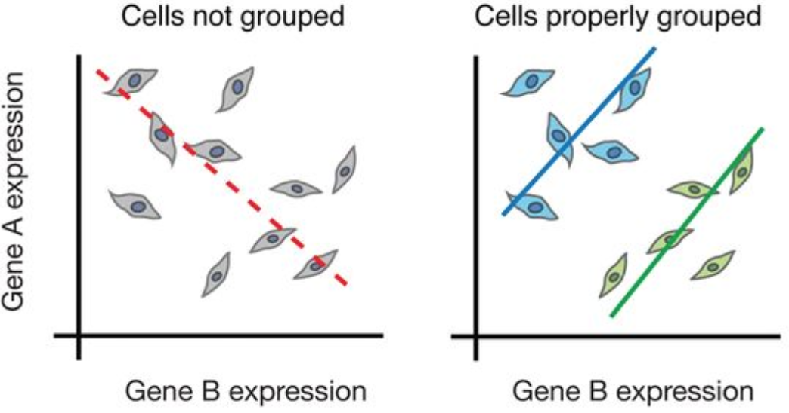

Introduction to single-cell RNA-seq
Single-cell RNA-seq
Why single-cell RNA-seq
Across human tissues there is an incredible diversity of cell types, states, and interactions. To better understand these tissues and the cell types present, single-cell RNA-seq (scRNA-seq) offers a glimpse into what genes are being expressed at the level of individual cells.

Image credit: courtesy of Dr. Ayshwarya Subramanian
This exciting and cutting-edge method can be used to:
- Explore which cell types are present in a tissue
- Identify unknown/rare cell types or states
- Elucidate the changes in gene expression during differentiation processes or across time or states
- Identify genes that are differentially expressed in particular cell types between conditions (e.g. treatment or disease)
- Explore changes in expression among a cell type while incorporating spatial, regulatory, and/or protein information
Popular methods to address some of the more common investigations include:

Challenges of scRNA-seq analysis
Prior to scRNA-seq, transcriptome analysis was performed using bulk RNA-seq, which is a method for comparing the averages of cellular expression. This method can be a good choice if looking at comparative transcriptomics (e.g. samples of the same tissue from different species), and for quantifying expression signatures in disease studies. It also has potential for the discovery of disease biomarkers if you are not expecting or not concerned about cellular heterogeneity in the sample.
While bulk RNA-seq can explore differences in gene expression between conditions (e.g. treatment or disease), the differences at the cellular level are not adequately captured. For instance, in the images below, if analyzed in bulk (left) we would not detect the correct association between the expression of gene A and gene B. However, if we properly group the cells by cell type or cell state, we can see the correct correlation between the genes.

Image credit: Trapnell, C. Defining cell types and states with single-cell genomics, Genome Research 2015 (doi: https://dx.doi.org/10.1101/gr.190595.115)
Despite scRNA-seq being able to capture expression at the cellular level, sample generation and library preparation is more expensive and the analysis is much more complicated and more difficult to interpret. The complexity of analysis of scRNA-seq data involves:
- Large volume of data
- Low depth of sequencing per cell
- Technical variability across cells/samples
- Biological variability across cells/samples
We will explore each of these complexities in more detail below:
Large volume of data
Expression data from scRNA-seq experiments represent tens or hundreds of thousands of reads for thousands of cells. The data output is much larger, requiring higher amounts of memory to analyze, larger storage requirements, and more time to run the analyses.
Low depth of sequencing per cell
For the droplet-based methods of scRNA-seq, the depth of sequencing is shallow, often detecting only 10-50% of the transcriptome per cell. This results in cells showing zero counts for many of the genes. However, in a particular cell, a zero count for a gene could either mean that the gene was not being expressed or the transcripts were just not detected. Across cells, genes with higher levels of expression tend to have fewer zeros. Due to this feature, many genes will not be detected in any cell and gene expression will be highly variable between cells.
scRNA-seq data is often referred to as zero-inflated; however, recent analyses suggest that it does not contain more zeros than what would be expected given the sequencing depth [Valentine Svensson’s blog post]. A more recent paper discussing modeling of scRNA-seq data is also available.
Biological variability across cells/samples
Uninteresting sources of biological variation can result in gene expression between cells being more similar/different than the actual biological cell types/states, which can obscure the cell type identities. Uninteresting sources of biological variation (unless part of the experiment’s study) include:
- Transcriptional bursting: Gene transcription is not turned on all of the time for all genes. Time of harvest will determine whether gene is on or off in each cell.
- Varying rates of RNA processing: Different RNAs are processed at different rates.
- Continuous or discrete cell identities (e.g. the pro-inflammatory potential of each individual T cell): Continuous phenotypes are by definition variable in gene expression, and separating the continuous from the discrete can sometimes be difficult.
- Environmental stimuli: The local environment of the cell can influence the gene expression depending on spatial position, signaling molecules, etc.
- Temporal changes: Fundamental fluxuating cellular processes, such as cell cycle, can affect the gene expression profiles of individual cells.

Image credit: Wagner, A, et al. Revealing the vectors of cellular identity with single-cell genomics, Nat Biotechnol. 2016 (doi:https://dx.doi.org/10.1038%2Fnbt.3711)
Technical variability across cells/samples
Technical sources of variation can result in gene expression between cells being more similar/different based on technical sources instead of biological cell types/states, which can obscure the cell type identities. Technical sources of variation include:
Cell-specific capture efficiency: Different cells will have differing numbers of transcripts captured resulting in differences in sequencing depth (e.g. 10-50% of transcriptome).
Library quality: Degraded RNA, low viability/dying cells, lots of free floating RNA, poorly dissociated cells, and inaccurate quantitation of cells can result in low quality metrics
Amplification bias: During the amplification step of library preparation, not all transcripts are amplified to the same level.
Batch effects: Batch effects are a significant issue for scRNA-Seq analyses, since you can see significant differences in expression due solely to the batch effect.

Image credit: Hicks SC, et al., bioRxiv (2015)
To explore the issues generated by poor batch study design, they are highlighted nicely in this paper.
How to know whether you have batches?
Were all RNA isolations performed on the same day?
Were all library preparations performed on the same day?
Did the same person perform the RNA isolation/library preparation for all samples?
Did you use the same reagents for all samples?
Did you perform the RNA isolation/library preparation in the same location?
If any of the answers is ‘No’, then you have batches.
Best practices regarding batches:
Design the experiment in a way to avoid batches, if possible.
If unable to avoid batches:
Do NOT confound your experiment by batch:

Image credit: Hicks SC, et al., bioRxiv (2015)
DO split replicates of the different sample groups across batches. The more replicates the better (definitely more than 2), if doing DE across conditions or making conclusions at the population level. If using inDrops, which prepares a single library at a time, alternate the sample groups (e.g. don’t prepare all control libraries first, then prepare all treatment libraries).

Image credit: Hicks SC, et al., bioRxiv (2015)
DO include batch information in your experimental metadata. During the analysis, we can regress out variation due to batch or integrate across batches, so it doesn’t affect our results if we have that information.
Conclusions
While scRNA-seq is a powerful and insightful method for the analysis of gene expression with single-cell resolution, there are many challenges and sources of variation that can make the analysis of the data complex or limited. Throughout the analysis of scRNA-seq data, we will try to account for or regress out variation due to the various sources of uninteresting variation in our data.
Overall, we recommend the following:
- Do not perform single-cell RNA-seq unless it is necessary for the experimental question of interest. Could you answer the question using bulk sequencing, which is simpler and less costly? Perhaps FACS sorting the samples could allow for bulk analysis?
- Understand the details of the experimental question you wish to address. The recommended library preparation method and analysis workflow can vary based on the specific experiment.
- Avoid technical sources of variability, if possible:
- Discuss experimental design with experts prior to the initiation of the experiment
- Isolate RNA from samples at same time
- Prepare libraries at same time or alternate sample groups to avoid batch confounding
- Do not confound sample groups by sex, age, or batch
We will not be covering snRNA-seq in this workshop! Below is a brief overview of snRNA-seq.
snRNA-seq analyzes the expression profiles from nuclei, instead of intact cells. As you may expect, fewer transcripts are detected from the nuclei (~7,000 genes), compared to intact cells (~11,000 genes). In some situations (depending on your research materials and goals), snRNA-seq can be the preferred method as opposed to scRNA-seq.
Some advantages of snRNA-seq include:
- Works well with hard-to-isolate samples (for example, adipocytes), as well as frozen tissues
- Reduces transcriptional artifacts from the isolation process
- Provides less biased cellular coverage